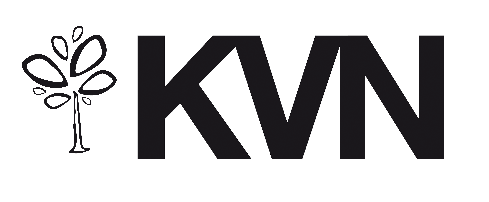

Velg riktig inngang for å starte.
Velg oppsettet læreren har bedt deg bruke.
Safe Exam Browser må være installert. Velg «Åpne Safe Exam Browser» hvis nettleseren spør.
Har du ikke SEB? Last ned Safe Exam Browser (åpnes i ny fane). Etter installasjonen kommer du tilbake hit og velger eksamensoppsett. Kontakt skolens IT hvis du trenger hjelp med installasjonen.
Prøv knappen igjen, eller last ned riktig fil og åpne den med Safe Exam Browser. Hvis SEB mangler, bruk nedlastingslenken over.
Aktiver JavaScript for å velge eksamensoppsett. Du kan også laste ned oppsettet uten Word eller oppsettet med Word og åpne filen i SEB.